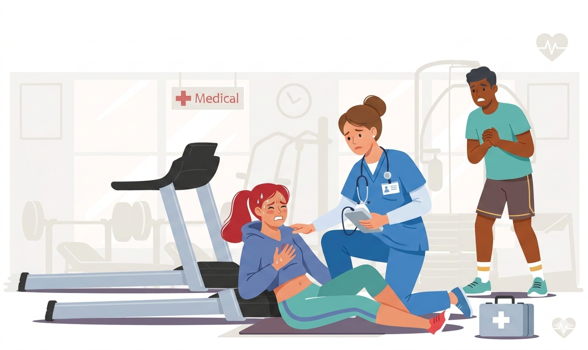
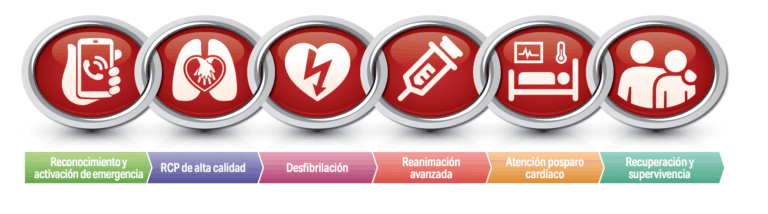
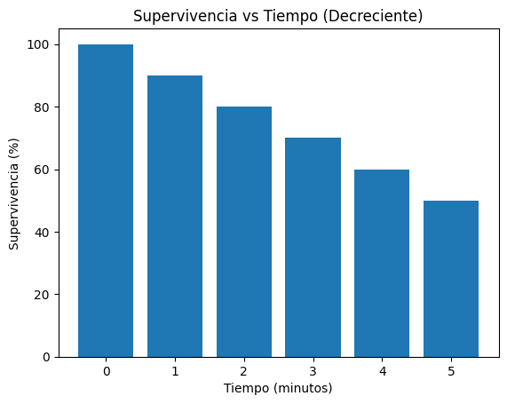
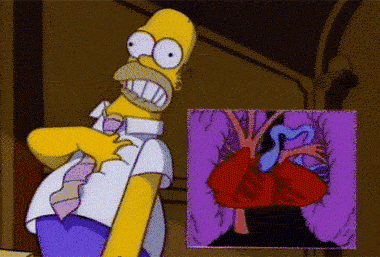
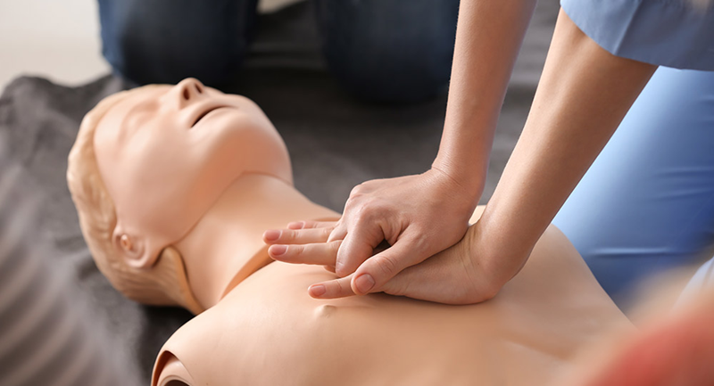

Primeros Auxilios Cardiovasculares
Del Gimnasio a la Sala de Urgencias
Instructor: Lic. Alejandra Ortiz

Bienvenidos: Dos Mundos, Una Misión
- Personal Trainers: Los primeros respondedores. Inician la cadena.
- Enfermería: El soporte vital avanzado. Continúan la cadena.
- Hoy aprenderemos a hablar el mismo idioma.
Objetivos de esta Clase (2.5 Horas)
- Identificar emergencias cardiovasculares comunes.
- Dominar la RCP de alta calidad.
- Entender el uso del DEA y la actividad eléctrica del corazón.
- Aprender a entregar/recibir un paciente crítico.
Anatomía Básica: El Corazón
- Sistema de Plomería: Vasos, venas, arterias (Bombeo mecánico).
- Sistema Eléctrico: Nodos y fibras que dictan el ritmo (Marcapasos).
La Diferencia Fundamental
No toda emergencia cardíaca es igual:
- Ataque Cardíaco: "Plomería" (Obstrucción). Sigue latiendo, pero sufre.
- Paro Cardíaco: "Eléctrico" (Cortocircuito). Se detiene bruscamente.
1. El Ataque Cardíaco en el Gimnasio
¿Qué verá el Entrenador?
- Detiene el ejercicio abruptamente.
- Presión ("un elefante pisándome").
- Dolor irradiado a brazo, mandíbula o espalda.
- Sudoración fría y palidez extrema.
1. El Ataque Cardíaco en la Clínica
¿Qué evaluará Enfermería?
- Signos vitales (TA, SatO2, FC).
- Preparación para ECG de 12 derivaciones.
- Vía venosa periférica.
- Protocolo MONA (Morfina, Oxígeno, Nitroglicerina, Aspirina).
Video Real: Síntomas de Infarto

Presten atención a los signos no verbales (Signo de Levine: puño al pecho).
2. El Paro Cardíaco Súbito (PCS)
- Colapso súbito.
- Pérdida de consciencia inmediata.
- No respira o tiene "respiración agónica" (Gasping).
- La muerte ocurre en minutos si no actuamos.
ACTIVIDAD 1: Análisis de Escenas
Nos dividiremos en grupos mixtos (PTs + Enfermería).
Tendrán 5 minutos para discutir cómo reaccionarían en los siguientes 2 casos.
Caso A: Zona de Pesas Libres
Juan, 55 años, press de banca. Suelta la barra, mano al pecho, suda pero está consciente.
- PT: ¿Qué haces en los primeros 30s?
- Enfermería: ¿Qué información le pedirás al PT?
Caso B: Cinta de Correr
María, 40 años. Colapsa sobre la cinta. No responde, bocanadas de aire cada 10s.
- PT: ¿Cuál es el problema? ¿Qué inicias?
- Enfermería: ¿Qué equipo preparas mentalmente?
Resolución de Casos
- Caso A (Infarto): Reposo inmediato, llamar a emergencias, tranquilizar.
- Caso B (Paro): Bajarla al suelo firme, pedir DEA, Iniciar RCP Inmediata.
La Cadena de Supervivencia (AHA)

1. Llamada rápida ➡ 2. RCP precoz ➡ 3. Desfibrilación ➡ 4. SV Avanzado ➡ 5. Cuidados ➡ 6. Recuperación.
Conectando los Eslabones
- Los pasos 1, 2 y 3 ocurren en el gimnasio (Territorio PT).
- Los pasos 4, 5 y 6 ocurren en el hospital (Territorio Enfermería).
- Sin los primeros tres, los últimos tres no sirven de nada.
El Factor Tiempo
Por cada minuto sin RCP y DEA, la supervivencia baja entre 7% y 10%.

Preparándonos para la Práctica
En la segunda mitad, ensuciaremos nuestras manos con compresiones, el DEA y un simulacro integrado.
Pero primero...
☕ DESCANSO
10 Minutos

Reanudamos: Soporte Vital Básico (RCP)
La RCP consta de dos componentes principales:
- Compresiones torácicas (C)
- Ventilaciones (A y B)
En el gimnasio (PT), si no hay protección, se prioriza RCP Solo con las Manos.
Características de la RCP de Alta Calidad
- Frecuencia: 100 a 120 compresiones por minuto.
- Profundidad: Al menos 5 cm (en adultos).
- Expansión: Dejar que el tórax vuelva a su posición original.
- Interrupciones: Minimizar pausas a menos de 10 segundos.
Canciones para el Ritmo (100-120 lpm)
Para recordar el ritmo correcto al comprimir:
- Stayin' Alive - Bee Gees
- Macarena - Los del Río
- Imperial March - Star Wars
Video Demostrativo: Técnica de RCP

Observen la postura corporal: brazos rectos, peso desde los hombros.
Diferencia de Entornos: Ventilaciones
- Trainers: Si usan mascarilla: 30 compresiones x 2 ventilaciones. Si no: solo compresiones.
- Enfermería: Uso de Ambú con oxígeno suplementario, manteniendo el 30:2 hasta tener vía aérea avanzada.
Desfibrilador Externo Automático (DEA)
Es el dispositivo que analiza el ritmo cardíaco y entrega una descarga eléctrica si es necesaria.
Cualquiera puede usarlo. Te HABLA y te dice qué hacer.
Pasos Universales del DEA
- ENCENDERLO (Lo más importante).
- Seguir las instrucciones de voz.
- Pegar los parches en el pecho desnudo.
- No tocar al paciente mientras analiza.
- Pulsar el botón de descarga si lo indica.
Consideraciones Especiales
- Sudor: Secar el pecho rápidamente con una toalla antes de pegar los parches.
- Vello en pecho: Afeitar rápidamente si el parche no pega.
- Parches de medicación: Retirarlos con guantes y limpiar la zona (Enfermería).
ACTIVIDAD 2: El Puente Eléctrico
Material: Tira impresa de un Electrocardiograma.
Vamos a entender QUÉ es lo que el DEA analiza por dentro y por qué el ejercicio afecta el corazón.
¿Qué estamos viendo en el papel?
El ECG es la "fotografía" de la electricidad del corazón.
- Onda P: Aurículas se contraen.
- Complejo QRS: Ventrículos se contraen.
- Onda T: Recarga.
Dinámica de Grupos
Grupos mixtos, circulen el ECG impreso:
- Enfermería: Ubiquen un QRS e intenten identificar el ritmo. Explíquenle al PT.
- Trainers: Relacionen el "QRS" con el pulso o lo que marca su reloj inteligente (Garmin/Apple Watch).
Por qué el DEA es Inteligente
A los entrenadores: No necesitan leer este papel en una emergencia.
El DEA busca ritmos "caóticos" (Fibrilación Ventricular) sin QRS. Al ver eso, dice: "Se aconseja descarga".
El Traspaso: El Puente Final
El Trainer debe reportar al Enfermero rápidamente (Técnica SAER):
- Situación: "Hombre 45 años, colapso súbito."
- Antecedentes: "Sin medicación, cardio leve."
- Evaluación: "No respiraba, 3 descargas del DEA."
- Respuesta: "Hacemos RCP de alta calidad."
ACTIVIDAD 3: Simulacro Integrado
Vamos a unir todo lo aprendido.
10 minutos de pura adrenalina controlada.
Escenario del Simulacro
- Lugar: Clase de Crossfit.
- Actores PT: Encuentran cliente tirado. Llaman a emergencias, inician RCP, usan DEA.
- Actores Enfermería: Llegan a los 3 min. Reciben reporte, asumen RCP y manejan el Ambú.
Debriefing (Reflexión del Simulacro)
- ¿Cómo se sintió la comunicación Trainer / Enfermero?
- ¿Se detuvo la RCP mucho tiempo al hacer el cambio?
- ¿La profundidad fue agotadora? (¡Turnarse cada 2 min!).
Conclusión y Preguntas
La cadena de supervivencia no es de un solo profesional. El entrenador salva el cerebro; enfermería salva el cuerpo y la calidad de vida.
¡Gracias por ser eslabones fuertes!
¿Preguntas?
1 / 35